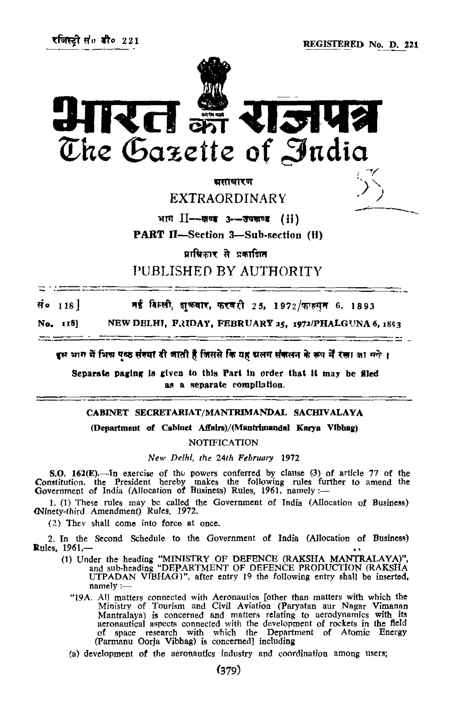
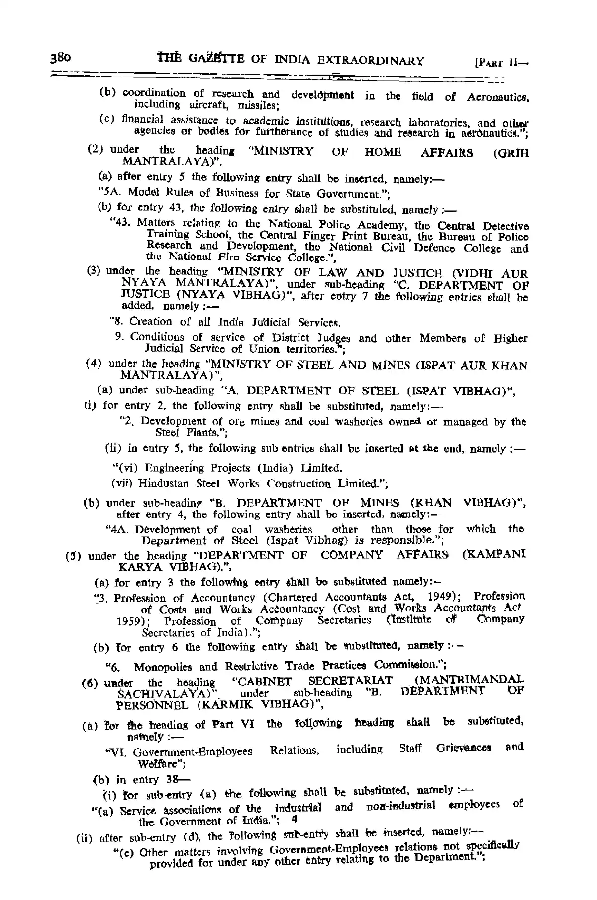
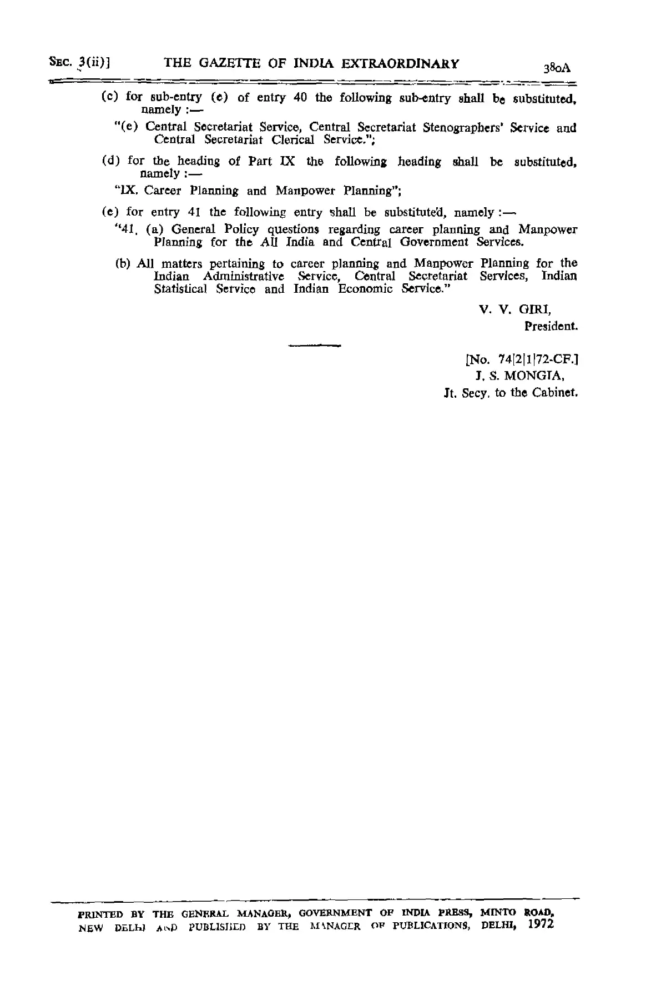

Amendment #93 (S.O. 162(E), 1972)
15 changes: 0 to the First Schedule, 15 to the Second Schedule. 15 applied
The order, page by page
Page 1 of 4

1after Schedule 2 › MINISTRY OF DEFENCE › DEPARTMENT OF DEFENCE PRODUCTION › entry 19
- 19A. All matters connected with Aeronautics [other than matters with which the Ministry of Tourism and Civil Aviation ( Paryatan aur Nagar Vimanan Mantralaya ) is concerned and matters relating to aerodynamics with its aeronautical aspects connected with the development of rockets in the fleld of space…
- a. development of the aeronautics industry and coordination among users [PART II—
- b. coordination of research and development in the field of Aeronautics including aircraft, missiles
- c. financial assistance to academic institutions, research laboratories, and other agencies or bodies for furtherance of studies and research in aeronautics.
applied at schedule 2 › ministry MINISTRY OF DEFENCE › department DEPARTMENT OF DEFENCE PRODUCTION › entry 19A in the Rules after #93
read page break
Page 2 of 4

23456789101112after Schedule 2 › MINISTRY OF HOME AFFAIRS › entry 5
- 5A. Model Rules of Business for State Government.
applied at schedule 2 › ministry MINISTRY OF HOME AFFAIRS › part I › group_heading The following subjects which are relatable to… in the Rules after #93
Schedule 2 › MINISTRY OF HOME AFFAIRS › entry 43
- 43. Matters relating to the National Police Academy, the Central Detective Training School, the Central Finger Print Bureau, the Bureau of Police Research and Development, the National Civil Defence College and the National Fire Service College.
applied at schedule 2 › ministry MINISTRY OF HOME AFFAIRS › part I › group_heading The following subjects which are relatable to… in the Rules after #93
after Schedule 2 › MINISTRY OF LAW AND JUSTICE › DEPARTMENT OF JUSTICE › entry 7
- 8. Creation of all India Judicial Services.
- 9. Conditions of service of District Judges and other Members of Higher Judicial Service of Union territories.
applied at schedule 2 › ministry MINISTRY OF LAW AND JUSTICE › department C › entry 8 in the Rules after #93
Schedule 2 › MINISTRY OF STEEL AND MINES › DEPARTMENT OF STEEL › entry 2
- 2. Development of ore mines and coal washeries owned or managed by the Steel Plants.
applied at schedule 2 › ministry MINISTRY OF STEEL AND MINES › department A › entry 2 in the Rules after #93
after Schedule 2 › MINISTRY OF STEEL AND MINES › DEPARTMENT OF STEEL › entry 5
- vi. Engineering Projects (India) Limited.
- vii. Hindustan Steel Works Construction Limited.
applied at schedule 2 › ministry MINISTRY OF STEEL AND MINES › department A › entry 5 in the Rules after #93
after Schedule 2 › MINISTRY OF STEEL AND MINES › DEPARTMENT OF MINES › entry 4
- 4A. Development of coal washeries other than those for which the Department of Steel (Ispat Vibhag) is responsible.
applied at schedule 2 › ministry MINISTRY OF STEEL AND MINES › department B › entry 4A in the Rules after #93
Schedule 2 › DEPARTMENT OF COMPANY AFFAIRS › entry 3
- 3. Profession of Accountancy (Chartered Accountants Act, 1949); Profession of Costs and Works Accountancy (Cost and Works Accountants Act 1959); Profession of Company Secretaries (Institute of Company Secretaries of India).
applied at schedule 2 › department DEPARTMENT OF COMPANY AFFAIRS › entry 3 in the Rules after #93
Schedule 2 › DEPARTMENT OF COMPANY AFFAIRS › entry 6
- 6. Monopolies and Restrictive Trade Practices Commission.
applied at schedule 2 › department DEPARTMENT OF COMPANY AFFAIRS › entry 6 in the Rules after #93
Schedule 2 › CABINET SECRETARIAT › DEPARTMENT OF PERSONNEL › VI
- VI. Government-Employees Relations, including Staff Grievances and Welfare
applied at schedule 2 › ministry CABINET SECRETARIAT › department C › group_heading VI in the Rules after #93
Schedule 2 › CABINET SECRETARIAT › DEPARTMENT OF PERSONNEL › entry 38 › item a
- a. Service associations of the industrial and non-industrial employees of the Government of India.
applied at schedule 2 › ministry CABINET SECRETARIAT › department C › group_heading VI › entry 38 › item a in the Rules after #93
after Schedule 2 › CABINET SECRETARIAT › DEPARTMENT OF PERSONNEL › entry 38 › item d
- e. Other matters involving Government-Employees relations not specifically provided for under any other entry relating to the Department.
applied at schedule 2 › ministry CABINET SECRETARIAT › department C › group_heading VI › entry 38 › item e in the Rules after #93
Page 3 of 4

131415Schedule 2 › CABINET SECRETARIAT › DEPARTMENT OF PERSONNEL › entry 40 › item e
- e. Central Secretariat Service, Central Secretariat Stenographers' Service and Central Secretariat Clerical Service.
applied at schedule 2 › ministry CABINET SECRETARIAT › department C › group_heading VIII › entry 40 › item e in the Rules after #93
Schedule 2 › CABINET SECRETARIAT › DEPARTMENT OF PERSONNEL › IX
- IX, Career Planning and Manpower Planning
applied at schedule 2 › ministry CABINET SECRETARIAT › department C › group_heading IX in the Rules after #93
Schedule 2 › CABINET SECRETARIAT › DEPARTMENT OF PERSONNEL › entry 41
- 41, (a) General Policy questions regarding career planning and Manpower Planning for the All India and Central Government Services.
- b. All matters pertaining to career planning and Manpower Planning for the Indian Administrative Service, Central Secretariat Services, Indian Statistical Service and Indian Economic Service.
applied at schedule 2 › ministry CABINET SECRETARIAT › department C › group_heading IX › entry 41 in the Rules after #93
Page 4 of 4

How this document was read
From the Government of India (Allocation of Business) Rules, 1961 and their amendments, as published by the Cabinet Secretariat (cabsec.gov.in), read by orgpedia. The readings of the older scanned gazettes have known gaps.